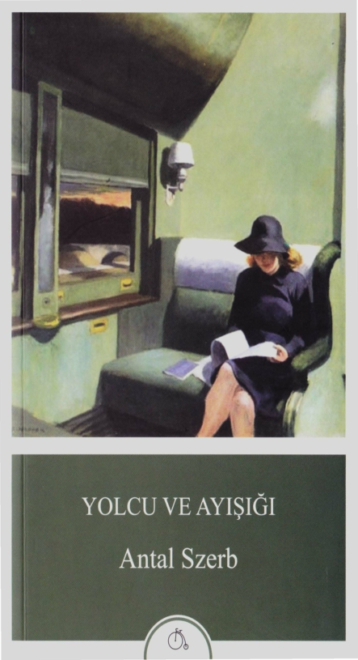

YOLCU VE AYIŞIGI
ANTEL SZERB
Aylak Adam
Roman
Kitabın Özgün Adı: Utas es holdvi/dg
©2016 Aylak Adam Kültür Sanat Yayıncılık
ISBN: 978-605-9691-20-8
Sertifika No: 27938
Tüm hakları saklıdır. Yayıncının yazılı izni olmaksızın
hiçbir yolla çoğaltılamaz.
1. Basım: Mart 2016
Yayın Yönetmeni: Kaya Tokmakçıoğlu Yayına Hazırlayan: Çiğdem Koyuncu Son Okuma: Öykü Toros Irvana Dizgi ve Mizanpaj: Ulaş Kantemir Kapak Tasarım: aArt
Baskı: Yıkılmazlar Basım Yay. Prom. ve Kağıt San. Tic. Ltd. Şti. Evren Mah. Gülbahar Cad. No: 62/C Güneşli - İstanbul (0212 630 64 73)
Matbaa Sertifika No: 11965
Aylak Adam Kültür Sanat Yayıncılık
Merkez Mah. Kesir Sok. Çakmak Apt. No: 5/4 Çekmeköy/İstanbul Tel: (0542) 586 7961
bilgi@aylakadamyayinlari.com aylakadamyayinlari.com facebook.com/aylakadamyayinlari twitter.com/aylakadamyayin
Antal Szerb (1901-1945). 20. yy. Macar edebiyatının en önemli yazar- larındandır. 32 yaşında Macaristan Edebiyat Akademisi'nin başkanlığı- na seçilmiştir. İlk romanı Pendragon Söylencesi ile büyük bir çıkış ya- kalayan yazarın İngilizce, Fransızca ve İtalyancadan çevirileri de vardır. Nazilerin toplama kampında hayata veda etmiştir.
YOLCU VE AYIŞIGI
ANTAL SZERB roman
macarca aslından çeviren vural yıldırım
Başkaldınyla benimsiyorum yasayı ve kuralı. Ya şimdi sırada ne var? Tüm çabalanmın karşılığını bekliyorum, Çünkü benimsiyor ve dışlıyor dünya.
Villon
1. BÖLÜM
1
Trendeyken henüz hiçbir sorun yoktu. Venedik'te başlamıştı her şey, daracık sokaklarla.
Deniz motorunda istasyondan şehrin içine doğru hareket ederken ve kestirme yol uğruna Canale Gran- de'yi terk ettiklerinde Mihaly'ın gözüne sağlı sollu dar sokaklar çarpmıştı. Ama bu sırada pek ilgilenmemişti onlarla, çünkü başlangıçta Venedik'in Venedik oluşu onu tümüyle meşgul ediyordu: evlerin arasındaki su, gondollar, lagün ve kentin tuğla kırmızısı-gül rengi se- vinci. Çünkü Mihaly İ talya'ya ilk kez geliyordu, otuz altı yaşında, balayında.
Sonu gelmeyen gezginlik yıllarında her yere gitmiş- ti, İngiltere ve Fransa'da yıllar geçirmişti ama İtalya'yı sürekli es geçmiş, henüz vaktinin gelmediğini ve buna daha hazır olmadığını hissetmişti. İ talya'yı da çocuk sa- hibi olmak gibi yetişkin işleri arasına yerleştirmişti; gizli gizli ondan korkuyordu da, tıpkı güçlü güneş ışığından, çiçeklerin kokusundan ve çok güzel kadınlardan kork- tuğu gibi.
11
Evlenmeseydi ve kuralına göre, İtalya'ya yapılan balayı yolculuğuyla başlayan bir evlilik hayatı yaşama- ya niyetlenmemiş olsaydı, belki de ölünceye dek erteler dururdu İtalya yolculuğunu. Şimdi de aslında İ talya'ya gelmek üzere çıkmamıştı yola, balayına çıkmıştı ve bu tümüyle başka bir şeydi. Ayrıca şimdi gelebilirdi de, çünkü artık bir koca idi. Şimdi artık, İtalya denen tehli- kenin tehdit oluşturmadığını düşünüyordu.
İlk günler barış içinde geldi geçti, balayı yolcusu- nun sevinçleri ve daha yumuşak, yorucu olmayan kent turları arasında. Tıpkı çok bilgili ve olağanüstü bir öze- leştiriyle donanmış insanlara yakışacağı üzere Mihaly ve Erzsi, 1 züppelikle züppelik karşıtlığı arasında bir orta yol bulmaya çalışıyorlardı. Tur rehberinin beklediği her şeyi yapmak için kendilerini ölümüne yormuyorlardı ama yurda dönüp de böbürlenerek, "Müzeler mi? Ah, müze- lere elbette gitmedik," diyen ve bunu söylerken gururla birbirine bakanlar arasına katılmak da istemiyorlardı. Bir akşam tiyatroya gittiler ve oyundan sonra ote-
lin lobisine vardıklarında Mihaly'ın canı birden şiddetle bir şey içmek istedi. Bunun ne olabileceğini kesin olarak bilmiyordu ama özellikle tatlı bir şarap istiyordu canı; Sisam Adası şarabının özel, klasik tadı geldi aklına ve de bunun tadına Paris'te, Rue de Petits Champs 7 numara- daki küçük bir şarapçı dükkanında ne sık baktığı. Sonra Venedik'in artık yarı yarıya Yunanistan sayılabileceğini ve burada Sisam şarabı ya da en azından Mavrodaph- ne'nin bulunabileceğini düşündü, çünkü İtalyan şarap- ları konusunda henüz bir deneyimi yoktu. Erzsi'den yu- karıya yalnız çıkmasını rica etti, hemen birazdan kendisi
1 Erzsi, Erzsebet'in kısaltmasıdır ve Elisabeth'in Macarca karşılığıdır.
(ç.n.)
12
de gelecekti, bir şey içecekti yalnızca, "Gerçekten sade- ce tek bir kadeh," dedi ciddileşerek, çünkü Erzsi her ne denli düzmece bir ciddiyetle de olsa onu genç bir kadı- na yakışacağı üzere, ölçülü olması konusunda uyarmış- tı. Otellerinin kıyısında yer aldığı Canale Grande'den uzaklaşıp bu sıralarda geceleyin bile pek çok Venedik- linin, bu kentin insanlarına özgü bir biçimde karınca gibi kaynaştığı Frezzeria çevresindeki sokaklara ulaştı. İnsanlar burada, bahçe yolunu aşıp öte yanına geçmek üzere yollara düşen karıncalar gibi yalnızca bu tek yolu izliyorlardı; öteki sokaklar ise boştu. Mihaly da karınca yolunda karar kıldı çünkü barların ve şarap dükkanla- rının, boş sokakların belirsiz loşluğu içinde değil, hiç kuşkusuz insanların dolaştığı sokakların kıyısında olabi- leceğini düşünmüştü. İçki satılan pek çok yer bulmuştu ama hiçbiri aradığı yer değildi. Her birinin bir kusuru vardı. Kimisinde oldukça şık, kimisinde ise bir hayli ba- sit insanlar bulunuyordu ve aradığı içkiyi hiçbirine ya- kıştıramamıştı. İçkinin bir biçimde kuş uçmaz kervan geçmez bir yere özgü bir tadı vardı. Onu Venedik'te yalnızca bir tek yerde bulabileceğini, bu yeri de kendi içgüdüsüyle bulması gerektiğini yavaş yavaş hissetmeye başlamıştı. Daracık sokakların ortasına böyle düşmüştü. Alabildiğine dar sokaklar yine alabildiğine dar so- kaklara açılıyordu ve nereye gitse bu sokaklar daha da daralıp karanlıklaşıyordu. Kollarını iki yana açacak olsa karşı karşıya duran ve ardında gizemli yoğun İtalyan yaşamlarının uyukladığını düşündüğü suskun, büyük pencereli evlere aynı anda dokunabilecek durumdaydı. Öyle yakındı ki, gece bu sokaklarda dolaşmak, hemen hemen bir sır konusunda boşboğazlık etmek demekti.
13
Kendisini daracık sokakların arasında saran bu tu- haf büyülenmişlik ve kendinden geçiş ne idi? Kendisini sonunda yurduna dönmüş biri gibi hissetmesinin nedeni neydi? Belki bir çocuk böyle bir düş görebilirdi -bah- çeli villalarda oturan ama geniş şeylerden korkan bir çocuk-, belki de bir yeniyetme, böylesine dar bir yerde, her yarım metrekarenin ayrı bir anlamının olduğu, atı- lacak on adımın artık sınır ihlali anlamına geldiği, kırık dökük bir masanın etrafında on yılların, insan hayatları- nın ise bir koltukta geçtiği yerlerde yaşamak isterdi ama bu da kesin değil.
Daracık sokakların arasında dolandı durdu böyle, ta ki artık gün doğumunun ve kendisinin Venedik'in öte yakasında, Yeni Kıyı'da olduğunun ayırdına varın- caya dek; buradan mezarlık adası ve daha ötedeki gi- zemli adalar, aralarında bir zamanlar cüzzamlılar kam- pının bulunduğu San Francesco del Deserto Adası ve çok daha uzaklarda Murano'nun evleri görülebiliyordu. Burada yoksul Venedikliler oturuyordu, yabancı akını- nın yararını ya hiç görmeyen ya da pek az gören yoksul Venedikliler; hastane buradaydı ve ölülerin gondolları da buradan çıkıyordu yola. Şimdi artık kimileri uyanmış işlerine gidiyorlardı ve dünya, hani insan gece uyuya- mayınca olur ya, işte öyle alabildiğine kasvetliydi. Ken- disini geri götürecek bir gondolcu buldu.
Erzsi bu sırada artık heyecandan ve yorgunluktan kötü bir durumdaydı. Her nasıl görünürse görünsün Venedik'te de polise telefon edilebileceği ancak saat bir buçukta aklına gelmişti ve gece vardiyasındaki re- sepsiyonistin yardımıyla yapmıştı da bunu, elbette bir sonuç alamayarak.
14
Mihaly hala bir uyurgezer gibiydi. Korkunç dere- cede yorgundu ve Erzsi'nin sorularına anlamlı yanıtlar vermeyi beceremiyordu.
"Dar sokaklar," dedi, onları bir kez de gece görmek gerekiyordu, bu onların ayrılmaz bir parçasıydı, başka- ları da öyle yapıyordu.
"İyi ama neden söylemedin ya da beni neden gö- türmedin?"
Mihaly yanıt veremedi, incinmiş bir ifadeyle yata- ğına sokuldu ve çok tatsız bir duyguyla uykuya daldı. Yani evlilik bu mu, diye düşünmüştü; böyle her umutsuz açıklamayı bu derece anlamaması mıydı? Be- nim de anlamadığım doğru ya.
15
2
Ama Erzsi uyumadı, alnını kırıştırarak kollarını başının altında birleştirmiş şekilde uzun süre yattı ve düşündü. Kadınlar geceyi uykusuz geçirmeye ve düşün- celere dalmaya genellikle daha iyi dayanıyorlar. Erzsi için Mihaly'ın, kendisinin anlayamadığı şeyler yapması ve söylemesi yeni ve şaşırtıcı bir şey değildi. Bir süre bu anlamamanın üstünü örttü, bilgece davranarak sorup soruşturmadı ve sanki Mihaly ile ilgili her şeyi çok es- kiden beri biliyormuş gibi davrandı. Suskunlukla sağla- nan ve Mihaly'ın kadınların doğuştan gelen, içgüdüsel bilgeliği olduğunu sandığı bu sahte üstünlük, ona sahip olmanın en güçlü aracıydı. Mihaly korkularla doluydu ve Erzsi'nin görevi bunları yatıştırmaktı.
Ama tüm bunların bir sınırı vardı, özellikle de şim- di artık evli bir çift idiler, ciddi bir balayındaydılar, böy- leyken bütün gece dışarıda kalmak yine de tuhaftı. Bir anlığına, içinde o doğal kadınsal kaygı belirdi, yoksa Mihaly başka bir kadınla birlikte mi eğlenmişti? Sonra bu dört dörtlük olanaksızlığı bir yana bıraktı. Böylesi bir şeyin hiç yakışık almaması bir yana, Mihaly'ın tanı-
17
madığı kadınlar karşısında ne denli çekingen ve ihtiyatlı olduğunu, hastalıklardan ne kadar korktuğunu, paraya nasıl da kıyamadığını ve ayrıca da kadınların onu ne kadar az ilgilendirdiğini iyi biliyordu.
Ama aslında Mihaly'ın bir kadının yanında oldu- ğunu bilmek çok rahatlatıcı bir şey olurdu. Bu belir- sizlik sona ererdi, bu tümüyle boş karanlık, Mihaly'ın geceyi nerede ve nasıl geçirdiğini tahayyül edememek. Sonra aklına Mihaly uğruna terk ettiği eski kocası Pa- taki Zoltan geldi. Erzsi o dönem hangi daktilocu kızın Zoltan'ın sevgilisi olduğunu her zaman bilirdi, oysa Zoltan kasılır, yüzü kızarırdı, acıma duygusu uyandıra- cak biçimde ketumdu ve bir şeyi ne ölçüde saklamaya çalışırsa Erzsi de o ölçüde her şeyin farkında olurdu. Mihaly ise tam tersine ıstıraplı bir vicdan bilinciyle her davranışını açıklamaya çalışırdı; Erzsi'nin kendisini ta- nımasını delice isterdi ve ne çok açıklama yaparsa olay o ölçüde karmaşık bir duruma gelirdi. Erzsi çoktandır Mihaly'ı anlamadığını biliyordu, çünkü Mihaly'ın ken- disine bile itiraf etmediği sırları vardı ve Mihaly da Er- zsi'yi anlamıyordu, zira kendisi dışında birinin iç dün- yasına karşı ilgi göstermek aklına bile gelmiyordu. Yine de evlenmiş olmalarının nedeni Mihaly'ın birbirlerini son derece iyi anladıklarını belirlemiş olmasıydı; ikisi- nin evliliği tam anlamıyla akılcı temellere dayanıyordu, geçici tutkulara değil. Acaba bu kurgu daha ne zamana dek sürdürülebilirdi?
18
3
Birkaç gün sonra bir akşam Ravenna'ya gittiler. Mihaly ertesi sabah çok erken kalktı, giyindi ve dışarı çıktı. Ünlü Bizans mozaiklerini, Ravenna'nın en önem- li ve görülmeye değer yanını tek başına incelemek isti- yordu, çünkü artık Erzsi ile paylaşamayacağı bir yığın işi olduğunu biliyordu ve bu da onlardan biriydi. Er- zsi sanat tarihi bakımından ona göre çok daha bilgili ve çok daha yatkındı. Daha önce de gelmişti İ talya'ya, bu yüzden Mihaly bir yere gidileceğinde neyi görecek- lerini ve ne düşüneceklerini genellikle ona bırakmıştı; resimler onun nadiren ilgisini çekiyordu, bir rastlantı sonucu olabilirdi bu, şimşek çakar gibi, binde bir. Ama Ravenna mozaikleri ... Onlar kendi geçmişinin tarihsel anıtları idiler.
Bir zamanlar bunlara Ervin'le, Tamas Ulpius'la ve Tamas'ın küçük kız kardeşi Eva ile birlikte Ulpiuslar- da büyük bir Fransızca kitapta bakmışlardı, sinirli ve açıklanamayan bir korkuyla, bir Noel gecesi. Muazzam büyüklükteki komşu odada Tamas Ulpius'un babası tek başına bir aşağı bir yukarı dolaşıp duruyordu. Masaya
19
dirseklerini dayayarak bakmışlardı resimlere ve resimle- rin altın rengi fonu bir maden galerisinin derinliklerin- den gelen, kaynağı bilinmeyen bir ışık gibi parlıyordu. Bizans resimlerinde içlerinde, ruhun o en derin yerinde uyuklayan dehşeti ayağa kaldıran bir şey vardı. On ikiye çeyrek kala paltolarını giymişler ve uyuşmuş bir yürek- le gece yarısı ayinine gitmek üzere yola koyulmuşlardı. Eva bayılmıştı o zaman; Eva'nın sinirleriyle bir sorun yaşandığı tek olaydı bu. Ondan sonra her şey bir ay bo- yunca Ravenna'dan ibaret olmuş ve Mihaly için bugüne dek korkunun belirlenemeyen bir türü olarak kalmıştı. Tamamen derinliklere gömülen bu bir ayın tümü, şimdi gözlerinde San Vitale Katedrali'nde, o olağanüstü güzellikte açık yeşil tonundaki mozaikler önünde oldu- ğu anı canlandırmıştı. Gençliği içine öylesine yoğun bir biçimde saplanmıştı ki, başı döndü ve sütunlardan biri- ne yaslanmak zorunda kaldı. Ama bu yalnızca bir saniye sürdü, derken yine ciddi bir insan oldu. Öteki mozaikler artık ilgilendirmiyordu onu. Otele geri döndü ve Erz- si'nin hazırlanmasını bekledi, ondan sonra birlikte görü- lecek şeylerin tümünü uzmanca inceleyip onlar üzerine konuştular. Mihaly doğal olarak sabahleyin San Vita- le' de olduğunu söylemedi, biraz utanarak süzüldü kilise- ye, sanki bir şey onu ele verebilirmiş gibi ve sabahki sar- sıntısını dengelemek için pek ilginç olmadığını belirtti. Ertesi gün meydanda bir kafede oturdular, Erzsi dondurma yedi, Mihaly kendisine biraz yabancı, acı bir içkiyi denedi ama sevmedi bunu ve içkinin tadını neyle giderebileceği üzerinde kafa yordu.
"Bu koku korkunç," dedi Erzsi. "Bu kentte nereye gidersen git her yerde bu kokuyu duyuyorsun. Gaz sal- dırısının da böyle bir şey olabileceğini düşünüyorum."
20
"Şaşıracak bir şey yok," dedi Mihaly. "Bu kent ceset kokuyor. Ravenna çökmekte olan bir kent, bin yılı aşkın bir zamandır sürekli olarak geriliyor. Rehber de bunu söylüyor. Üç altın çağ yaşadı, sonuncusu İsa'dan sonra sekizinci yüzyıldaydı."
"Salak şey sen de!" dedi Erzsi gülümseyerek. "Sü- rekli cesetleri ve ceset kokusunu düşünüyorsun. Oysa bu pis koku özellikle yaşamdan ve yaşam kalitesinden geliyor. Bu kokunun nedeni gübre fabrikası, tüm Ra- venna'nın sayesinde geçindiği fabrika."
"Ravenna gübreyle mi geçiniyor? Büyük Teodo- rik'in ve Dante'nin mezarının bulunduğu bu kent, karşı- laştırıldığında Venedik'in sonradan görme sayılabileceği bu kent, öyle mi?"
"Öyle işte güzelim."
"Rezalet."
O anda meydana oldukça gürültülü bir motosiklet daldı ve gözlüklü, alabildiğine motosikletçi gibi giyin- miş adam motosikletin üstünden öyle bir sıçrayıp indi ki, sanki bir atın sırtından iner gibiydi. Çevresine bakın- dı, Mihalyları gördü ve dosdoğru masalarına yöneldi, motosikleti bir at gibi yanında yürütüyordu. Masaya varınca gözlüğünü miğferin siperini kaldırır gibi yukarı kaldırdı ve, "Selam Mihaly. Seni arıyordum," dedi. Mihaly büyük bir şaşkınlıkla Janos Szepetneki'yi tanıdı. Bir anda, "Burada olduğumu nereden biliyor- sun?" demekten başka bir şey çıkmadı ağzından. "Venedik'teki otelde Ravenna'ya gittiğini söyledi-
ler. Üstelik bir insan akşam yemeğinden sonra Raven- na'da meydandan başka nerede olabilir ki? Gerçekten de güç olmadı. Dosdoğru buraya geldim Venedik'ten. Dur, oturayım biraz."
21
"Şey... Eşimi tanıştırayım," dedi Mihaly sinirli si- nirli. "Erzsi, bu beyefendi, Janos Szepetneki, eski sınıf arkadaşım, ondan hiç... Hiç sana söz etmedim sanı- rım," diye ekledi ve yüzü kıpkırmızı oldu.
Janos gizlemediği bir soğuklukla Erzsi'yi baştan aşağı süzdü, eğildi, elini sıktı ve o andan sonra kadının orada olduğunu görmezden geldi. Neredeyse hiç ko- nuşmadı, yalnızca bir limonata ısmarladı.
Epey uzun bir süre sonra Mihaly konuştu.
"Ee, anlatsana. Burada, İtalya'da aradığına göre bir nedenin olmalı."
"Sonra anlatırım. Her şeyden önce seni görmek is- tedim çünkü evlendiğini duydum."
"Bana hala kızgın olduğunu sanıyordum," dedi Mihaly. "En son Londra'da Macar Elçiliği'nde karşılaş- mıştık, o zaman sen salondan çıkıp gitmiştin. Ama öyle ya, kızacağın bir şey yok şimdi doğal olarak," diye sür- dürdü Janos'un yanıtlamadığını görünce. "İnsan olgun- laşıyor. Herkes olgunlaşıyor ve birine on yıllar boyunca neden kızdığını unutuyor."
"Sanki sana neden kızdığımı biliyormuş gibi konu- şuyorsun."
"Ee, tabii ki biliyorum," dedi Mihaly ve yine kızardı. "Biliyorsan söyle bakalım," dedi Szepetneki bir sa- vaşçı gibi.
"Bunu burada istemiyorum... Eşimin yanında." "Beni rahatsız etmiyor bu. Cesurca söyle bakalım. Londra'da seninle konuşmaya neden yanaşmadım aca- ba?"
"Çünkü bir zamanlar altın saatimi senin çaldığını sandığım gelmişti aklıma. O zamandan beri kimin çal- dığını biliyorum artık."
22
"Ne kadar da salaksın. Altın saatini ben çaldım." "Yani sen mi çaldın saati?"
"Ben tabii."
Erzsi, o ana dek zaten yerinde gergin gergin otur- muştu, çünkü insanları tanıdığı kadarıyla, Janos Szepet- neki'nin yüzünden ve ellerinden onun zaman zaman altın bir saat çalmaya alışkın biri olduğunu okumuş ve sinirli bir halde, içinde pasaportların ve çeklerin bulun- duğu el çantasına sımsıkı yapışmıştı. Aslında oldukça saygılı biri olan Mihaly'ın bu saat konusunu açmasına çok şaşırdı ve çok kötü oldu ama bir insanın tutup da ötekine saatini çaldığını söylediği, ardından da susma- larıyla birlikte çöken sessizlik dayanılacak gibi değildi. Ayağa kalktı ve, "Otele dönüyorum. Beylerin konuşa- cakları öyle şeyler var ki... " dedi.
Mihaly büyük bir kızgınlıkla baktı ona.
"Dur gitme. Şimdi artık benim karımsın, artık her şey seni de ilgilendiriyor."
Bunu söyledikten sonra Janos Szepetneki'ye döndü ve bağırdı ona:
"Peki öyleyse bana Londra'da elini neden verme- din?"
"Nedenini çok iyi biliyorsun. Bilmeseydin şimdi böyle öfkelenmezdin. Ama benim haklı olduğumu bi- liyorsun."
"Daha açık konuş."
"İnsanları anladığın gibi anlamazlıktan gelmeyi de iyi biliyorsun; gözünden yitip giden ve zaten aramadı- ğın kişileri bulmamayı da. Bu yüzden kızdım sana." Mihaly bir süre sustu.
"Eğer benimle buluşmak istediysen... Çünkü Lond- ra'da buluşmuştuk."
23
"Evet, ama bir rastlantı sonucu. O sayılmaz. Ayrıca söz konusu olanın ben olmadığımı iyi biliyorsun." "Başkası söz konusuysa... Onları boş yere aramış olurdum."
"O yüzden de aramadın, öyle değil mi? Oysa belki de elini uzatman yeterliydi. Ama şimdi bir şansın daha var. Beni dinle. Baksana, sanırım Ervin'i buldum." Mihaly'ın yüzü bir anda değişti. Öfke ve şaşkınlık sevinç dolu bir meraka bıraktı yerini.
"Deme! Nerede?"
"Tam olarak bilmiyorum daha, ama şu anda İtal- ya'da, Umbria ya da Toscana'nın manastırlarından bi- rinde. Roma'da gördüm, bir geçit töreni sırasında bir yığın rahibin arasındaydı. Yanına gidip ayini bozamaz- dım. Ama orada tanıdığım bir papaz vardı, ondan bu rahiplerin Umbria ya da Toscana manastırlarına bağlı olduğunu öğrendim. Bunu söylemek istedim sana. Ma- demki şimdi burada, İtalya'dasın, onu aramakta bana yardım edebilirsin.
"Evet. Teşekkür ederim ama yardım edip edeme- yeceğimi bilmiyorum. Nasıl olacağını da bilmiyorum. Bir de şimdi balayındayız. Tutup da Umbria ve Toscana manastırlarının tümünü dolaşamam. Ervin'in benimle buluşmak isteyip istemediğini de bilmiyorum. Beni gör- mek isteseydi nerede olduğunu çoktan bildirirdi. Janos Szepetneki, artık git. Umarım yine birkaç yıl seni gör- mem."
"İşte gidiyorum. Karın çok soğuk bir kadın." "Görüşünü sormadım."
Janos Szepetneki motosikletine bindi. "Limonatanın parasını da öde!" diye bağırdı geriye dönüp ve bu arada çökmüş olan karanlıkta yitip gitti.
24
Evli çift orada kaldı, uzun süre konuşmadılar. Er- zsi kızgındı, aynı zamanda komik de buluyordu bu durumu. Sınıf arkadaşlarıyla karşılaşacak olurlarsa ... Anlaşılan bu öğrencilik çağı olayları Mihaly'ı derinden etkiliyordu. Bir gün şu Ervin'le Tamas'ın kim oldukla- rını sormak gerekir... Her ne denli alabildiğine soğuk olsalar da. Erzsi genellikle gençleri ve yaşına göre dav- ranmayan insanları sevmezdi.
Ama aslında onu kızdıran tümüyle başka bir şey- di. Doğal olarak kendisini kızdıran, Szepetneki'nin hiç hoşuna gitmemiş olmasıydı. Böyle bir... Böyle bir ne idüğü belirsiz yaratığın kendisiyle ilgili ne düşündüğü sanki azıcık da olsa onu ilgilendirirmiş gibi. Ama yine de dünyada bir kadın için kocasının arkadaşlarının dü- şüncesinden daha can alıcı bir şey yoktur. Erkekler eğer kadınlar söz konusuysa inanılmaz ölçüde etki altında bırakılabiliyorlar. Bu Szepetneki'nin Mihaly'ın arkadaşı olmadığı da doğru ya. Daha doğrusu kelimenin alışılmış anlamında dostu değil ama öyle anlaşılıyor ki, araların- da yine de çok güçlü bir ilişki var ve ayrıca beş para etmez bir erkek bile bir ötekini bu tür konularda etki- leyebiliyor.
"Şeytan alsın, neden hoşuna gitmedim ki onun?" İşin özüne bakılacak olursa Erzsi buna hiç de alışık değildi. Zengin, hoş, iyi giyimli, gösterişli bir kadındı. Erkekler onu çekici ya da en azından cana yakın bu- lurlardı. Mihaly'ın kendisine bağlılığında da Erzsi'den her erkeğin beğeniyle söz etmesinin bir rolü olduğunu biliyordu. Artık çoğu zaman Mihaly'ın kendisine ken- di gözleriyle değil de başkalarının gözüyle baktığından kuşkulanmıştı. Sanki kendi kendine şunu söyler gibiydi: Eğer ben de öbür insanlar gibi olsaydım Erzsi'yi ne çok
25
severdim. Şimdi şu pezevenk çıkıp geliyor ve onun ho- şuna gitmiyor. Bunun sözünü etmeden duramazdı. "Söylesene lütfen, neden hoşuna gitmedim şu arka- daşın olacak yankesicinin?"
Mihaly gülümsedi.
"Bırak şunu canım. Onun hoşuna gitmeyen sen de- ğilsin. Benim karım olman hoşuna gitmedi."
"Neden?"
"Çünkü senin yüzünden gençliğime ihanet ettiği- mi düşünüyor, ortak gençliğimize. Onları unuttuğumu ve yaşamımı başka ilişkiler üzerine kurmuş olduğumu. Oysa şimdi... Şimdi sen hemen güzel, kendi halinde ar- kadaşlarım olduğunu söylersin. Buna vereceğim yanıt Szepetneki'nin arkadaşım olmadığı ama bu doğal ola- rak sorudan kaçmak olurdu. Ama... Nasıl söylesem ... Bu tür insanlar da var... Saat hırsızlığı çocukça bir ön alıştırma idi. Szepetneki o zamandan beri iyice palazla- nan bir dolandırıcı oldu çıktı, bir yığın parası da oldu ve o sıralar neredeyse güç kullanarak çeşitli miktarlarda parayı üstüme yıktı ve ben bunları ödeyemedim çün- kü nerede sürttüğünü bilmiyordum, bu arada hapis de yattı ve bana Baja'dan2 ona beş pengö1 göndermem için mektup yazdı. Zaman zaman ortaya çıkıveriyor ve her zaman da hiç hoş olmayan konulardan söz etmeyi başa- rıyor. Ama dedim ya, bu tür insanlar da var. Bilmiyor- duysan bile hiç olmazsa şimdi görmüş oldun. Söylesene lütfen, buralarda bir şişe şarap bulabileceğimiz bir yer yok mu? Odamızda içerdik. Meydanda geçirdiğimiz bu halkla iç içe hayattan bıktım artık."
2 Macaristan'ın güneybatısında, Mohaç yakınlarında bir kent. (ç.n.) 'Macaristan'da 1927-1946 yılları arasında kullanılmış olan para birimi. 1 pengö 100 krajcar idi. (ç.n.)
26
"Otelimizde bulabilirsin, lokantası da var."
"Peki, odamızda içersek bir rezalet çıkmaz mı? Uy- gun mu bu?"
"Mihaly, garsonlara ve otelcilere karşı duyduğun bunca korkuyla beni mezara götüreceksin."
"Açıkladım ya sana. Dünyada en yetişkin insanlar onlar ve ayrıca da yurt dışında kural dışı bir şey yapmak istemiyorum."
"İyi. Ama gene içmek de ne oluyor?"
"Kesinlikle bir şey içmem gerek. Çünkü sana Tamas Ulpius'un kim olduğunu ve nasıl öldüğünü anlatmak is- tiyorum."
27
4
"Sana bu çok eskiden olup bitmiş olayları anlat- mam gerekiyor, çünkü çok önemliler. Önemli olaylar genellikle çok eskiden olup bitmişlerdir ve onları bil- mediğin sürece, kızma ama, belli bir ölçüde, yaşamıma birden karışmış bir yabancı gibi kalırsın.
Liseye giderken en büyük eğlencem yürüyüşe çık- maktı ya da daha doğrusu orada burada sürtmek diye- lim. Bir delikanlıdan söz edildiğine göre bu deyiş daha uygun. Peşte'nin her mahallesini ayrı ayrı, belli bir yol izleyerek keşfettim. Her mahallenin, hatta her sokak parçasının ayrı bir havası, ortam açısından bir değeri vardı benim için. Ayrıca bugün de tıpkı o zamanlar ol- duğu gibi evlerle kendimi eğlendirebiliyorum. Bu ko- nuda yaşlanmadım. Evler bana çok şey söylüyor. Benim için, tıpkı bir zamanlar ozanlar için doğa ya da onların doğa dedikleri şey ne anlama geliyorsa o anlama geli- yor.
Ama en çok Buda Kalesi'ni seviyordum. Eski so- kaklarından hiç bıkmadım. Eski şeyler o zaman da ye- nilerden daha çok çekiyordu beni. Benim gözümde bir
29
yığın insan yaşamını içine çeken şeyin daha derin bir anlamı vardı; geçmişi tıpkı Kelemen Kömfves'in karı- sının yüksek Deva Kalesi'ni4 kalıcı kılması gibi daimi yapıyordu.
Kendimi ne de güzel anlatıyorum, dikkat ettin mi? Ama bunu gerçekleştiren belki de şu güzel Sangiovese şarabıdır.
Tamas Ulpius'u kalede pek çok kez görmüştüm, çünkü orada otururdu. Bu benim gözümde kendi ba- şına da çok romantik bir şeydi ama yüzünün sarışın, arşidüklere özgü, kırılgan melankolisi ve daha bir yı- ğın başka şey de hoşuma gidiyordu. Ölçülü bir nezaketi vardı, koyu renk elbiseler giyerdi ve sınıf arkadaşlarıyla arkadaşlık etmezdi. Benimle de.
Şimdi yine kendimden söz etmem gerekiyor. Sen beni her zaman gelişmiş kasları olan, düşüncesiz, yaşlı bir delikanlı gibi, Peşte'dekilerin pokerci yüzü dedikleri türden, güven dolu, dingin bir yüz sahibi biri olarak ta- nıyorsun ve bildiğin gibi her zaman az çok uykusuz olu- rum. Efendim, ben liseye giderken tümüyle bambaşka biriydim. Sana o zaman çekilmiş bir resmimi göstermiş- tim. Gözlerinle gördün ya, na:;ıl da ince, aç, tedirgin, kendinden geçmiş bir yüzüm vardı. Çok çirkin oldu- ğumu sanıyorum ama yine de en çok o zamanki yüzü- mü severdim. Bir de bunun yanına uygun bir delikanlı bedeni düşle; ince, köşeli, hızlı büyümekten eğilmiş bir sırtı olan bir oğlan ve buna uygun cılız ve aç bir karakter ekle.
4 Deva, Macaristan'ın güneyinde, Maros Irmağı kıyısında yer alan bir kale ve aynı zamanda kadınları çok seven bir duvarcı ustasının öyküsü- nün anlatıldığı bir Macar baladıdır. (ç.n.)
30
Bu durumda sağlıklı olmadığımı düşünebilirsin, ne bedensel ne de ruhsal olarak. Kansızlık çekiyordum ve korkunç bunalımların işkencesi altında idim. On altı ya- şımdayken bir akciğer iltihabı sonucu halüsinasyonlar görmeye başlamıştım. Bir şey okurken çoğu kez arkam- da birinin durduğunu ve okuduğum kitaba baktığını duyumsardım. Orada gerçekten de kimsenin olmadığı kanısına varmak için başımı çevirmek zorunda kalır- dım. Bazı geceler de korkunç bir karabasanla yatağımın yanında birinin durduğu ve bana baktığı duygusuyla uyanırdım. Tabii orada kimse olmazdı ve sürekli ken- dimden utanırdım. Bu utanç verici durumumdan dolayı ailemde yavaş yavaş çekilmez hale gelmiştim. Öğle ye- meğini yerken yüzüm giderek kızarır ve bir süre sonra en küçük bir neden bile, birden ağlamaya başlayacağı- mı sanmama yol açardı. Bu gibi anlarda hemen odadan dışarı fırlardım. Anne ve babamın ne denli düzen se- ven insanlar olduklarını biliyorsun; nasıl şaşırdıklarını ve nasıl kızdıklarını hayal edebilirsin, ağabeylerim ve Edit'in ne çok alay ettiklerini de. Sonunda işi, okulda saat iki buçukta özel Fransızca dersim olduğu yalanını söylemeye kadar vardırdım; böylece ötekilerden daha önce bir başıma yiyebiliyordum öğle yemeğimi. Derken, yavaş yavaş akşam yemeğini de benim için
bir kenara ayırmalarını sağlamayı başardım.
Tüm bunlara daha sonra en korkunç hastalık belir- tisi olarak hayali girdap eklendi. Tıpkı şimdi söylediğim gibi bir girdap. Zaman zaman yanımdaki yerin yarıldı- ğını ve korkunç bir uçurumun kıyısında olduğumu his- sediyordum. Ama yine de girdabı kelimesi kelimesine algılaman gerekmiyor, bu girdabı hiç görmemiştim, bir fikrim yoktu, sadece orada, yanı başımda olduğunu bi-
31
liyordum. Ayrıca bir de orada olmadığını, yalnızca düş- lediğimi de biliyordum; bu konuların ne denli karmaşık olduğunu bilirsin ya. Ama şu bir gerçek ki, bu girdap duygusuna ne zaman yakalansam, kımıldamayı göze alamıyor, tek söz olsun edemiyor ve her şeyin bittiğini sanıyordum.
Ayrıca bu duygu uzun sürmedi ve bu tür nöbetleri öyle sık geçirmiyordum. Bir keresinde coğrafya dersin- de olmuştu ve çok berbat bir şeydi. Tam sözlüye çağrıl- dığım sırada yanı başımda belirivermişti girdap. Kıpır- dayamıyordum bile, yerimde oturmayı sürdürüyordum. Öğretmen bir süre daha seslendi, derken kımıldamadı- ğımı görünce yanıma geldi. 'Ne derdin var senin?' dedi. Doğal olarak yanıtlayamadım. Bunun üzerine bir süre bana baktı, ondan sonra kürsüye döndü ve sınava bir başkasını çağırdı. Öylesine ince bir papaz ruhuna sahip- ti ki, bu konudan bir daha hiç söz etmedi. Buna kar- şın sınıf arkadaşlarım ise bir türlü unutmak bilmediler. İnat yüzünden tahtaya kalkmadığımı ve de öğretmenin benden korktuğunu sandılar. Bir anda ünlü bir 'büyük adam' oldum ve okulda duyulmadık bir popülerliğin tadını çıkardım. Bir hafta sonra coğrafya öğretmeni, Janos Szepetneki'yi tahtaya çağırdı. Bugün gördüğün Janos Szepetneki'yi. Szepetneki en serüvenci maskesini takındı yüzüne ve yerinden kalkmadı. Öğretmen bunun üzerine yerinden kalktı, Szepetneki'nin yanına gitti ve müthiş bir tokat attı. Szepetneki o günden sonra benim çok büyük bir torpilim olduğuna inandı.
Ama biz Tamas Ulpius'tan söz edelim. Bir gün ilk kar düşmüştü yere. Okulun bitmesini ve fazladan öğle yemeğini alacağım zamanı güçlükle bekledim ve hemen kaleye koştum. Kar benim için özellikle büyük bir tut-
32
kuydu ve de kar altındayken mahalleler tümüyle baş- kaydı, öyle ki insan bildiği sokaklar arasında yolunu yitirebilirdi. Uzun uzun dolaştım, ondan sonra Bastya gezinti yoluna çıktım ve Buda Dağları'na doğru dalıp gittim. Birdenbire yanı başımdaki yer yine yarılmıştı. Girdap bu kez daha anlaşılır durumdaydı, çünkü ger- çekten de bir yükseltinin üzerindeydim. Girdapla o za- mana dek birçok kez karşılaştığım için pek dehşete ka- pılmamıştım, hatta belli bir soğukkanlılıkla yerin yeni- den birleşmesini ve girdabın yok olmasını bekliyordum. Bir süre böyle bekledim, ne kadar beklemiştim bilmiyo- rum, çünkü bu gibi anlarda zaman duygusu insanı terk ediyor, tıpkı uyurken ya da sevişirken olduğu gibi. Ama şu kadarı kesin ki, hu, öncekilere göre çok daha uzun sürmüştü. Artık ortalık kararmıştı ve hala ama hala gir- dap yerinde duruyordu. Bugünkü de amma inatçı, diye düşündüm ve o zaman girdabın büyüdüğünün dehşetle ayırdına vardım ve artık benimle kıyısı arasında yalnızca on santimlik bir toprak parçası kalmıştı ve yavaş yavaş bana doğru yaklaşıyordu. Birkaç dakika sonra sonum gelecek, aşağıya uçacağım. Sımsıkı yapıştım korkuluğa. Ondan sonra gerçekten gelip yetişmişti girdap. Ayağımın altındaki toprak kaymıştı ve demir korkuluğa yapışmış bir durumda boşlukta sallanıyordum. Ellerim yorulunca düşeceğim, diye düşünüyordum ve sessizce, yazgıya boyun eğerek dua etmeye başladım, ölüme ha- zırlandım.
O sırada Tamas Ulpius'un yanı başımda durduğunu fark ettim.
'Derdin ne?' diye, sorarak elini omzuma koydu. Girdap o anda yok oldu ve eğer Tamas tutmasaydı, yorgunluktan neredeyse yere düşüyordum. Bir sıraya
33
yasladı beni ve dinlenmemi bekledi. Daha iyi olduğumu hissedince ona kısaca girdap olayını anlattım, ömrüm- de ilk kez hem de. Nasıl olduğunu bilmiyorum ama bir anda en iyi arkadaşım oluvermişti. Yeniyetme çocukla- rın, ilk sevgili gibi oldukça yoğun ama daha derin ve daha ciddi bir biçimde düşledikleri türden bir dost. Derken o zamanlar her gün buluşmaya başladık. Tamas bana gelmek istemiyordu, çünkü tanışma tören- lerini sevmediğini söylemişti, buna karşılık çok geçme- den beni evlerine çağırdı. Ulpius Evi'ne böyle girdim. Tamas Ulpiuslar çok eski ve yıkık dökük bir evin üst katında oturuyorlardı. Ama yalnızca dışarıdan çok eski ve yıkık dökük görünüyordu; içi tıpkı şu eski İtalyan otelleri gibi çok güzel ve rahattı. Gerçi büyük odaları ve sanat eserleriyle bir bakıma hayaletlerin gezindiği bir yere benziyordu; tıpkı bir müze gibiydi. Çünkü Tamas Ulpius'un babası arkeolog ve müze yöneticisiydi. Dede- si ise bir zamanlar saatçilik yapmış, dükkanı da eskiden bu evdeymiş. Şimdi artık yalnızca çok eski saatlerle ve kendisinin buluşu olan çeşit çeşit tuhaf saat mekaniz- malarıyla donatılmış oyuncaklarla kendi keyfince oynu- yordu.
Tamas'ın annesi yaşamıyordu. Tamas ve küçük kız kardeşi Eva babalarından nefret ediyor ve onu soğuk- luğu ve suratsızlığıyla genç yaşındaki annelerini ölüme göndermekle suçluyorlardı. Ulpius Evi'ndeki daha ilk gidişimdeki ilk şaşırtıcı deneyimim bu olmuştu. Eva ba- basından söz ederek gözlerinin ayakkabı düğmesi gibi olduğunu söylemişti -nitekim bu konuda haklıydı da-, Tamas ise dünyanın en doğal ses tonuyla şunu söyle- mişti: 'Çünkü biliyor musun, babam alabildiğine sıkıcı bir herif,' o da bu konuda haklıydı. Ben, biliyorsun ya,
34
birbirine sımsıkı yapışmış bir ailede büyüdüm, anne ve babamı, kardeşlerimi çok sevdim, babamı her zaman taparcasına sevdim ve ebeveynlerle çocukların birbirle- rini sevmemelerini ya da çocukların yabancı insanlar- mış gibi ebeveynlerini eleştirmelerini düşünemiyordum bile. Yaşamımda karşılaştığım ilk büyük ilkel başkaldırı buydu. Bu başkaldırı, her ne denli babama karşı başkal- dırmak aklımın ucundan bile geçmese de, tuhaf bir bi- çimde benim için alabildiğine sempatikti. Tamas Ulpius babasına katlanamıyordu ama bir o kadar da dedesini ve küçük kız kardeşini seviyordu. Küçük kız kardeşini o denli çok seviyordu ki artık bu da bir tür başkaldırı gibi görünüyordu. Kardeşlerimi ben de sevdim, onlarla çok fazla çekişmedim, aile dayanışmasını saf ve dalgın doğam elverdiğince ciddiye aldım. Ama bizde kardeş- lerin birbirlerine duydukları sevgiyi göstermek gibi bir alışkanlık yoktu; birbirimize karşı göstereceğimiz her türden zayıflığı gülünç, hatta utanç verici bir şey sayıyorduk. Sanırım pek çok ailede de durum bu. No- elde birbirimize armağan almazdık; eğer içimizden biri evden gider ya da eve dönerse ötekileri selamlamazdı ve de eğer yolculuğa çıkmışsak yalnızca anne ve baba- mıza saygı belirten mektuplar yazar, sonuna da şöyle yazardık: Peter'e, Laci'ye, Edit'e ve Tivadar'a selamlar. Ulpiuslarda durum tümüyle bambaşka idi. İki kardeş özenle gözetilen bir nezaket içinde konuşurlardı ve ay- rılırlarken birbirlerini duygulanmışçasına öperlerdi; bir saatliğine ayrılıyor olsalar bile. Daha sonra ayrımına vardığım üzere birbirlerini çok ama çok kıskanıyorlar- dı ve hiç kimseyle arkadaşlık etmemelerinin nedeni de büyük ölçüde buydu. Gece gündüz birlikteydiler. Gece de, dediğim gibi, çünkü aynı odada kalıyorlardı. Benim
35
için en tuhaf olanı buydu. Bizde Edit'i on iki yaşına ge- lince bizden, oğlanlardan ayırmışlardı ve o zamandan beri de ayrı bir kadınlar dairesi oluşmuş, kız arkadaşları gelmeye başlamıştı ona, hatta bizim tanımadığımız ve çok son derece küçümsediğimiz eğlenceler üreten er- kek arkadaşları da. Delikanlılık imgelemimi alabildiğine meşgul ediyordu Eva ile Tamas'ın birlikte kalmaları. Bu durumda cinslerin ayrılığının onların içinde bir biçim- de silikleştiğini ve her ikisinin de androjen bir karakter edinmiş olduklarını düşlüyordum. Tamas ile genellikle kızlarla konuşulduğu gibi sakınarak ve incelikle konu- şuyordum, buna karşılık Eva ile birlikteyken, Edit'in kız arkadaşlarının, yani kız oldukları su götürmez olan varlıklar karşısında duyduğum o sıkıcı gerilimi duyum- samıyordum.
Büyükbabanın, en olmadık zamanlarda, çoğu kez de gecenin bir yarısında ve en olmadık giysilerle, pele- rinlerle, şapkalarla kardeşlerin odasına ayaklarını sürü- yerek girmesine güç alıştım. Kardeşler onu her zaman törensel tezahüratlarla karşılıyorlardı. Önceleri yaşlı amcanın öykülerinden sıkıldım ve dediklerini pek de iyi anlayamadım, çünkü ihtiyar Almanca konuşuyordu ve bu bir parça da Ren bölgesi ağzıylaydı, zira Maca- ristan'a Köln'den göçüp gelmişti. Ama daha sonraları masallarının tadına vardım. İhtiyar eski Peşte'nin adeta canlı bir ansiklopedisiydi. Benim gibi evlere dost biri için büyük ikramiye demekti bu. Kaledeki her evin ve sahiplerinin öyküsünü biliyordu. Öyle ki, şimdiye dek yalnızca görünüşleriyle tanıdığım Kale evleri yavaş ya- vaş kişisel ve yakın tanıdıklar durumuna gelmişti.
Ama babalarından ben de nefret ediyordum. Birbi- rimizle bir kez olsun konuştuğumuzu anımsamıyorum.
36
Beni gördüğünde yalnızca bir şeyler homurdanır ve dö- ner giderdi. İki Ulpius eğer babalarıyla birlikte akşam yemeği yemeleri gerekmişse bundan korkunç acılar çe- kerlerdi. Büyük bir salonda yerlerdi ve akşam yemeği sırasında biri bile tek kelime etmezdi. Ondan sonra iki kardeş oturur ve babaları, yalnızca ayaklı bir lambanın aydınlattığı büyük salonda bir aşağı bir yukarı dolaşır dururdu. Babaları salonun öte ucuna vardığında bedeni loşluğun içinde yiterdi. Birbirlerine bir şey söylerlerse babaları yanlarına gelir, 'Ne var, ne konuşuyorsunuz?' diye sorardı hasmane bir tavırla. Ama şans bu ya, eve seyrek gelirdi. Küçük meyhanelerde bir başına sarhoş oluncaya dek palinka içerdi, kötü insanlar gibi. Tamas'la tanıştığımızda din tarihiyle ilgili bir in- celeme üzerinde çalışıyordu. İnceleme onun çocukluk dönemi oyunlarından söz ediyordu. Ama konuyu karşı- laştırmalı din tarihi yöntemiyle işliyordu. Çok tuhaf bir inceleme idi; bir yandan din tarihinin parodisi, öte yan- dan da kendisi üzerine ölümüne ciddi bir incelemeydi. Tamas da benim gibi eski şeylere karşı delice bir ilgi duyardı. Onun açısından bakıldığında bu şaşıla- cak bir şey değildi: Bir yandan baba mirasıydı bu, öte yandan evleri bir müze gibiydi. Tamas için doğal olan şey antikalardı; modern şeyler ise tuhaf ve yabancı idi. Sürekli olarak her şeyin eski ve tam ona göre bir yer olduğu İ talya'ya gitmeyi arzulardı. Ve işte, ben burada oturuyorum ve o hiç gelemedi daha... Benim eski şeyler karşısında kapıldığım çekicilik daha çok yalnızca pasif bir tadına varış ve entelektüel bir tanıma arzusuydu, Tamas'ın kapıldığı çekicilik ise etkin bir hayal uğraşı idi. Sürekli olarak tarihi oynardı.
37
Bunu şöyle anlaman gerekiyor: İki kardeşin Ulpi- us Evi'ndeki yaşamı sürekli bir tiyatro idi, sürekli bir commedia dell'arte. En küçük bir bahane bile olayı baş- latmaya, yani Tamas ve Eva'nın bir şeyin rolünü yapma- ya, daha doğrusu kendi deyişleriyle oyun oynamalarına yeterdi. Dede, bir kalede yaşayan ve arabacısına sevdalı bir kontes üzerine bir şeyler anlatır ve hemen o an Eva kontes olurdu, Tamas da arabacı; ya da Ulah uşaklarının Kral naibi Majlath'ı nasıl öldürdüklerini anlatır ve Eva kral naibi olur, Tamas da Ulah uşakları veya çok daha uzun, karmaşık ve bir dizi dehşetengiz tarihsel dramlar gelişiverirdi. Oyunlar doğal olarak, commedia dell'arte gibi yalnızca ana çizgileriyle belirtirdi olayları: Bir iki giysi parçasıyla, özellikle de dedenin tükenmek bilme- yen ve şaşılası gardırobundan alınma bir iki giysiyle kos- tüm tanıtılmış olurdu, ondan sonra pek uzun olmayan ama alabildiğine Barok, dolambaçlı mı dolambaçlı bir diyalog gelirdi, derken bir cinayet ya da intihar. Çün- kü şimdi düşünüyorum da, hemen o anda doğaçlama oynanan oyunlar, her zaman için zorbalıkla gerçekle- şen ölüm görüntüleriyle doruğa ulaşırdı. Tamas ve Eva günde bir kez birbirlerini ya boğarlar, ya zehirlerler, ya hançerlerler ya da zeytinyağında kızartırlardı. Geleceklerini, eğer düşünmüşlerse bunun üzerine, tiyatrodan bağımsız olarak düşleyemiyorlardı. Tamas oyun yazarı olmaya hazırlanıyordu, Eva ise büyük bir aktris. Ama hazırlanma sözcüğü pek doğru değil çünkü Tamas hiç oyun yazmamıştı, Eva'nın ise bir tiyatro oku- luna gitmesi gerektiği düşünde bile aklına gelmiyordu. Buna karşılık çok daha büyük bir tutkuyla oyun izleme- ye yalnızca Ulusal Tiyatro'ya gidiyorlardı.
38
Tamas hafif tiyatrodan tıpkı modern mimariden ol- duğu gibi nefret ediyordu; cinayetin ve intiharın bol bol bulunduğu klasik oyunları seviyordu en çok.
Ama tiyatroya gitmeleri için para gerekiyordu ve babaları da sanırım onlara hiçbir zaman cep harçlığı vermiyordu. Yaşlı aşçı kadın onlar için küçük bir gelir kaynağı anlamına geliyordu, işi Ulpiusların dünyevi var- lıklarını şapşalca gözetmekti ve ev yönetiminde kullanı- lan paradan birkaç fillfr5 artırıp gençler için bir kenarda biriktirirdi. Bir de gizemli kaynaklardan çıkıp gelen ve ötede beride bulunan birkaç koronasıyla dede; sanırım bir köşede çalışan saatçi olarak kazanmış olmalıydı bun- ları. Ama tüm bunlar doğal olarak Ulpiusların tiyatro tutkusunu karşılamaya yeterli değildi.
Para konusunu Eva'nın düşünmesi gerekirdi. Tamas'ın yanında bu para sözcüğünü söylemek yasaktı. Eva düşünürdü de; para edinme konusunda olağanüstü yaratıcı buluşları vardı. Satılabilecek tüm eşyalarını iyi bir fiyata satmayı becerirdi; zaman zaman evin müzelik değerlerinden de bir şeyler sattığı olurdu ama bu, ba- baları dolayısıyla pek riskli bir şeydi ve Tamas da eğer alışılmış bir antika eksilmiş ise bunu iyi karşılamazdı. Kimi zaman Eva manavdan, pastaneden, eczaneden, hatta elektrik tahsildarından bile şaşırtıcı borçlar alırdı. Eğer tüm bunlar bir işe yaramamışsa, işte o zaman ça- lardı. Aşçı kadından çalardı, ölümü hiçe sayarcasına ve onun sarhoşluğundan yararlanarak babasından çalardı. En güvenilir ve belli bir açıdan en onurlu gelir kaynak- ları buydu. Ama bir keresinde bir pastanenin kasasın-
'Macariscan'da 1946 yılından beri kullanılan para birimi, forintin yüzde biri. (ç.n.)
39
dan on koronayı6 yürütmeyi de başarmıştı ve bununla gurur duyardı. Kuşkusuz anlatmadığı olaylar da vardı. Benden de çalardı. Bunun ayrımına varıp da acı bir şe- kilde karşı çıkınca çalmak yerine bana düzenli bir vergi ödeme zorunluluğu getirdi; haftada belli bir miktar pa- rayı aile fonuna yatırmam gerekiyordu. Tamas'ın doğal olarak bunu bilmemesi gerekiyordu."
Erzsi burada araya girdi:
"Moral insanity. "7
"Evet, öyle," diye sürdürdü Mihaly. "Bu tür uz- manlık terimleri belli bir ölçüde yatıştırıyor insanı ve belli bir ölçüde bağışıklık da sağlıyor. Hırsız değil de akıl hastası. Ama Eva ne hırsızdı ne de akıl hastası. Onda yalnızca, parayla bağlantılı şeylere karşı hiçbir ahlaki duygu yoktu. İki Ulpius kardeş dünyanın o denli dışındaydı ki, dünyanın ekonomik ve toplumsal düzeni, parayı nasıl kazanmak ve nasıl kazanmamak gerektiği konusunda hiçbir fikirleri yoktu. Para onlar için var olan bir şey değildi. Onlar yalnızca belli birtakım kağıt parçaları ve gümüş diskler karşılığında tiyatroya gidile- bileceğini biliyorlardı. Paranın büyük soyut mitolojisi, modern insanın dinsel ve ahlaki duygularının temeli ve Para Tanrı'ya kurban adamanın yolu yordamı olan şunlar: Onurlu çalışmak, ekonomik davranmak, yarar sağlamak ve benzeri şeyler onlar için bilinmeyen kav- ramlardı. Bu tür şeyler insanın doğuştan özelikleridir, ama onlar doğuştan böyle özellikler getirmemişlerdi; ya da insan benim gibi evde öğrenir ama dedeleri onlara evde olsa olsa kaledeki evlerin öyküsünü öğretmişti.
" Macaristan'da 1892-1925 yılları arsında kullanılmış olan para birimi. (ç.n)
7 (İng.) Ahlaki delilik; Akıl hastası olmayan fakat ahlaki davranış bo- zukluğu sergileyen bireyler için kullanılan psikoloji terimi. (y.n.)
40
Ne denli hayalci olduklarını, pratik gerçeklikten nasıl da dehşete kapıldıklarını düşleyemezsin bile. El- lerinde hiçbir zaman gazete görülmezdi, dünyada neler olup bittiği konusunda sezgileri bile yoktu. Oysa o sı- rada Dünya Savaşı vardı ama onları ilgilendirmiyordu. Bir gün okulda sözlü sınav sırasında Tamas'ın, Istvan Tisza'nın adını hiç duymadığı çıkmıştı ortaya. Przem- ysl, savaş alanında şehit olunca Tamas bir Rus komuta- nından söz edildiğini sandı ve kibarca sevincini belirtti; neredeyse döveceklerdi. Daha sonraları entelektüel ço- cuklar Ady ve Babits8 üzerine tartışıyorlardı; Tamas'ın herkesin komutanlardan söz ettiğine ilişkin bir kuramı vardı ve Ady'nin de uzun süre bir komutan olduğunu sandı. Entelektüel çocuklar Tamas'ı tıpkı öğretmenleri gibi budala sayıyorlardı. Tuhaf dehası, tarihsel bilgisi okulda hiç bilinmedi ve o da buna hiç üzülmedi.
Başka her bakımdan da yaşamın alışılmış düzeni- nin dışında duruyorlardı. Eva'nın olasılıkla gece yarısı saat ikide Fransızca defterini Svab Tepesi'nde unuttuğu aklına geliyor ve bunun üzerine ikisi de kalkıyor, giyini- yor, Svab Tepesi'ne tırmanıyorlar ve sabaha dek orada dolanıp duruyorlardı. Tamas ertesi gün bir krala özgü aldırmazlıkla okulu asıyor, Eva ona yaşlı Ulpius'un im- zasıyla bir belge yaratıyordu. Eva hiç mi hiç gitmemişti okula ve hiçbir işi de yoktu ama bir başınayken de bir kedi gibi kendisini çok güzel eğlendiriyordu.
Her zaman bitebilirdiniz onların yanında, insan on- ları hiç mi hiç rahatsız etmezdi, sanki orada yokmuşsu- nuz gibi yaşamlarını sürdürürlerdi. İnsanı gece yarısı da severek karşılarlardı ama lise çağımdayken evdeki disip-
' XX. yüzyıl Macar yazınının ünlü iki ozanı. (ç.n.)
41
!in dolayısıyla onlara gidemezdim, bu olsa olsa tiyatro- dan sonra kısa bir süre için olurdu -ve sürekli onlarda uyumanın ne güzel olabileceğinin düşünü kurardım. Li- seyi bitirdikten sonra sık sık orada geceledim.
Daha sonraları ünlü bir İngiliz denemesinde Keltle- rin temel karakterlerinin, olguların zulmüne karşı baş- kaldırı olduğunu okudum. İki Ulpius İşte bu bakımdan Kelt idi. Buna şunu da ekleyeyim, Tamas da ben de Kelt- ler için çıldırıyorduk, Gral Söylencesi için, Parsifal için. Olasılıkla aralarında kendimi bu ölçüde iyi hissetmemin nedeni bu tür Keltlerden olmalarıydı. Aralarında kendi- mi bulmuştum. Kendi evimizde kendimi neden utanıla- cak bir yabancı gibi duyumsadığımın ayrımına vardım. Çünkü orada olgular hüküm sürüyordu. Ulpiuslarda kendimi evimde gibi hissediyordum. Her gün oraya gi- derdim ve boş vaktimin tümünü onlarda geçirirdim. Ul- pius Evi'nin atmosferine girdiğim zaman sürekli utanç duygum geçiyor ve sinirlilik belirtileri de yok oluyor- du. Uçurumla en son Tamas Ulpius beni çekip çıkardığı zaman karşılaşmıştım. Bir daha omzumun üzerinden kimse bakmıyor ve geceleyin karanlıkta gözlerini bana dikmiyordu. Rahat rahat uyuyordum ve yaşam ondan beklediğim şeyi bana vermişti. Bedensel olarak da ken- dimi toparladım, yüzüm düzeldi. Yaşamımın en mutlu dönemi buydu ve herhangi bir koku ya da ışık, içimde bunun anısını canlandırırsa şimdi de bedenimi o heye- can ve insanın başını döndüren, uzaklardaki mutluluk, tanıdığım tek mutluluk sarıyor baştanbaşa.
Doğal olarak bu mutluluğu da bedava vermemişler- di. Ulpius Evi'nde kendimi evimdeymiş gibi duyumsa- mam için benim de olgular dünyasından kopmam gere- kiyordu. Ya o, ya o: İki yerde sürdürülen bir yaşam ola-
42
mazdı. Ben de gazete okumayı bıraktım ve entelektüel arkadaşlarımla ilişkimi kestim. Yavaş yavaş beni de tıpkı Tamas gibi budala biri saymaya başladılar; bu bana çok acı veriyordu, çünkü gururluydum ve akıllı olduğumu da biliyordum ama bu konuda elden bir şey gelmezdi. Evdekilerden tümüyle koptum; annemle, babamla, kar- deşlerimle Tamas'tan öğrendiğim o ölçülü nezaket için- de konuşuyordum; aramızda o zaman oluşan uçurumu o günden beri ne denli uğraştıysam da kapatamadım ve o zamandan beri de aileme karşı vicdanım sızlar durur. Daha sonra bu uzaklık duygusunu söz dinler biri olarak düzeltmeye çalıştım, ama bu artık başka bir konu ... Evdekiler bendeki değişimi şaşkınlıkla izlediler. Amcamlarda kaygı dolu bir aile toplantısı yaptılar ve benim kadına gereksinim duyduğum sonucuna vardılar. Amcam bunu büyük bir tedirginlik içinde ve sayısız sim- gesel deyim kullanarak bildirdi bana. Can kulağıyla din- ledim ama herhangi bir eğilim göstermedim; daha da ötesi o sıralar Tamas, Ervin, Janos Szepetneki bir de ben kadınlara dokunmayacağımıza ant içmiştik, çünkü yeni Gral Şövalyeleri biz olacaktık. Kadınlar o günden sonra yavaş yavaş uzak kaldılar ve annemle babam beni oldu- ğum gibi benimsediler. Annem, sanırım ta bugüne değin ev işlerine bakan hizmetlileri ve bize gelen yeni tanı- dıkları benim herkes gibi olmadığım konusunda özenle uyarır. Oysa işte... Kaç yıl oluyor, benim içimde mik- roskopla bile günlük yaşama aykırı hiçbir şey gösterile- mez. Annemle babamın böylesine tedirgin bir biçimde fark ettikleri bu değişim nelerden oluşuyordu, işte bunu bilemiyorum. İki Ulpius insanın her bakımdan kendile- rine uyum göstermesini beklerdi, bu böyleydi ve ben de severek, hatta mutlu bir biçimde onlara uyum sağladım.
43
İyi bir öğrenci olmaktan vazgeçtim. Görüşlerimi yeni- den gözden geçirdim ve o zamana dek beğendiğim bir yığın şeyden nefret ettim: Askerlikten ve savaş alanında elde edilen şan şereften, sınıf arkadaşlarımdan, Macar yemeklerinden, okulda 'yiğit' ya da 'kafa dengi' diyebi- lecekleri her şeyden. O zamana dek büyük bir tutkuyla ilgilendiğim futbolu bıraktım; izin verilen tek spor es- krimdi, üçümüz de daha büyük bir çabayla bu sporun alıştırmasını yapıyorduk. Tamas'a ayak uydurmak için yığınla kitap okudum; bu her ne denli zoruma giden bir şey olduysa da. Dinler tarihine olan ilgim bu tarihlerde başladı, ciddileşip her şeyden vazgeçtiğim zaman.
İki Ulpius'un karşısında vicdanım yine de sızlıyor- du. Onları aldattığım duygusuna kapılmıştım. Çünkü onlar için doğal bir özgürlük olan şey benim için zor, in- sanı kıvrandıran bir başkaldırıydı. Aşırıya varan biçimde kentsoyluydum ve evde de aşırı derecede bu doğrultuda yetiştirmişlerdi, bunu sen de biliyorsun. Derin bir soluk almam gerekiyordu ve sigara külünü yere serpmek be- nim için büyük bir kararlılık gösterisine dönüşmüştü; iki Ulpius bunun başka bir yolunu bilmiyorlardı bile. Eğer Tamas'la birlikte okulu kırmaya kahramanca ka- rar vermişsem tüm gün mide krampları geçiriyordum. Benim öyle bir yaradılışım vardır ki, sabah erkenden uyanırım ve gece uykuluyumdur, öğle ve akşam yemeği saatleri en aç olduğum zamanlardır, tabakta yemek ye- meyi severim ve makarnayla başlamayı sevmem, düzeni severim ve polislerden de anlatılmaz bir biçimde kor- karım. Bu özelliklerimi, düzeni seven ve vicdan sahibi tüm kentsoylu varlığımı Ulpiusların yanında gizlemem gerekiyordu. Onlar gerçi bunu biliyorlardı, bir görüşle- ri de vardı bu konuda, ama ince yaradılışlıydılar, eğer
44
içimdeki düzen düşkünlüğü ya da tutumluluk ara sıra patlak verirse bundan söz etmezler ve bağışlarcasına başka yöne bakarlardı.
En güç olanı oyunlarına katılmamın gerekmesiydi. Bende her tür oyunculuk eğilimi tam anlamıyla eksikti, bastırılamaz bir biçimde utangacımdır ve dedenin kızıl yeleğini bir Borgia dizisinde Papa VI. Alexander olmam için bana giydirdiklerinde önceleri neredeyse ölüyor- dum. Daha sonra bunu da öğrendim ama hiçbir zaman onlar gibi alabildiğine güzel bir Barok metin döktüre- medim anında. Buna karşılık çok iyi bir kurban oldu- ğum çıkmıştı ortaya. En güzel zehirlenebilen ve yağda kızartılabilen bendim. Çoğu kez ben yalnızca Korkunç İvan'ın acımasızlıklarının kurbanı olan halk oluyordum ve birbiri ardına çeşitli biçimlerde yirmi beş kez hırılda- mam ve ölmem gerekiyordu. Özellikle hırıldama tekni- ğimin başarısı büyüktü.
Sana, bunca şaraptan sonra bile zor olsa da, şunu da söylemem gerekiyor, artık karım olduğun için bilmen gerek: Ben kurban olmayı çok sevmiştim. Daha sabah- leyin bunu düşünüyor ve bütün gün bunu bekliyordum, evet... "
"Kurban olmayı neden seviyordun?" diye sordu Er- zsı.
"Hımın... Erotik nedenlerden işte, nasıl düşündü- ğümü anlarsan... Evet. Daha sonraları keyfime göre kurban olabileceğim öyküleri kendim uyduruyordum. Örneğin şunun gibileri (sinema o zamanlar artık ha- yalimi yönlendirmeye başlamıştı): Diyelim ki Eva bir Apaçi kızıydı, o zamanlar filmler onlardan söz ederdi ve beni kandırıp bir Apaçi kampına götürüyor, orada içki içiriyor, sonra beni soyuyorlar ve öldürüyorlar ya
45
da bunun daha tarihsel bir ortamda geçen aynısı: Judit ve Holofernes öyküsünü oynamak; bunu çok severdim ya da bir Rus komutanı olurdum, Eva bir kadın casus- tur, beni uyutur ve savaş planlarını çalar. Tamas olası- lıkla Eva'nın ardına düşen ve sırları yeniden ele geçiren becerikli bir emir subayıdır ama Eva çoğu zaman onu da zararsız duruma getirir ve Ruslar korkunç bir yitime uğrarlardı. Bu gibi şeyler o anda, oyun sırasında ger- çekleşirdi. İlginçtir, bu oyunlar Tamas'ın da Eva'nın da çok hoşuna giderdi. Ama işin ilginç yanı, ben özellikle utanırdım onlar adına, bugün de bundan söz ederken çok utanıyorum, onlar ise utanmazlardı. Eva erkekle- ri aldatan, ele veren, öldüren bir kadın olmayı severdi, Tamas ve ben ise aldatılan, ele verilen, öldürülen ya da alabildiğine aşağılanan bir erkek olmayı severdik." Mihaly sustu ve içti. Erzsi bir süre sonra sordu: "Söylesene, Eva Ulpius'a aşık mıydın?"
"Hayır, sanmıyorum. Eğer ne olursa olsun birine aşık olmamı istiyorsan, bu durumda ben daha çok Tamas'a sevdalıydım. Tamas benim idealimdi, Eva yalnızca bunun cabası ve erotik bir araçtı bu oyunlarda. Ama Tamas'a sevdalanmış olduğumu da pek içimden gelerek söyleye- mem çünkü bu deyiş yanlış anlaşılabilir, hatta aramızda bir tür homoerotik ilişki olduğunu düşünebilirsin, oysa bunun sözü bile edilemezdi. Sözcüğü ergenlik çağı açısın- dan kullanırsak, en iyi arkadaşımdı o ve bu ilişkide asıl hastalıklı olan şey, az önce söylediğim gibi, tümüyle başka ve daha derin bir doğaya sahip bir şeydi."
''Ama söylesene Mihaly... Öyle güç ki bunu düş- lemek... Yıllarca birlikteydiniz ve seninle Eva arasında masum olmayan hiçbir flört gelişmemiş olması müm- kün mü?"
46
"Hayır, hiçbir şey gelişmedi."
"Nasıl olur bu?"
"Nasıl mı? Gerçekten de... Sanırım birbirimize öy- lesine yakındık ki birbirimizle flört edemezdik, birbi- rimize aşık olamazdık da. Aşk için uzaklık gereklidir, sevenler bu uzaklık aracılığıyla birbirlerine yaklaşırlar. Yakınlaşma doğal olarak düşseldir çünkü aşk aslında on- ları birbirinden uzaklaştırır. Aşk iki kutupludur, iki sev- gili dünyanın en çelişkili yapıya sahip kutuplarıdır... " "Çok akıllıca şeyler söylüyorsun böyle gecenin bir yarısı. Durumun tümünü anlayabilmiş değilim. Yoksa çirkin miydi kız?"
"Çirkin mi? Hayatımda gördüğüm en güzel kadın oydu. Hayır, bu da tam anlatamıyor. O zamandan beri her türlü güzelliğe onu ölçü almama sebep olabilecek güzellikte bir kadındı. Daha sonraki tüm aşklarım öyle ya da böyle ona benzemişti, kiminin bacağı, kiminin ba- şını tıpkı onun gibi kaldırışı, bir başkasının ise telefon- daki sesi."
"Ben de mi?"
"Sen de... Evet."
"Ne konuda benziyorum ona?" Mihaly'ın yüzü kızardı ve sustu. "Söyle... Çok rica ederim."
"Nasıl anlatsam... Lütfen ayağa kalk ve yanıma gel."
Erzsi Mihaly'ın sandalyesinin yanına gitti, Mihaly kolunu onun beline doladı ve yukarıya doğru baktı. Er- zsi gülümsedi.
"Şimdi... İşte bu," dedi Mihaly. "Bana böyle yuka- rıdan gülümsediğinde. Ben kurban olduğum zamanlar Eva da öyle gülümserdi."
47
Erzsi kendini kurtardı ve yerine oturdu.
"İlginç," dedi keyifsizce. "Sen kesinlikle bir şey gizliyorsun. Sorun değil. Her şeyi anlatmaya mecbur değilsin. Ben de yeniyetmelik dönemimle ilgili olarak her şeyi anlatmadığım için herhangi bir vicdan azabı duymuyorum. Önemli de saymıyorum bunu. Ama söy- lesene... Sen o kıza sevdalıydın. Bu yalnızca bir ifade sorunu. Bizde buna aşk diyorlar."
"Hayır, söyledim ya ona aşık değildim. Yalnızca ötekiler."
"Nasıl ötekiler?"
"İşte şimdi onlardan söz etmek istiyorum. Yıllar boyunca Ulpius Evi'nin benden başka konuğu olmadı. Sekizinci sınıf öğrencisi olduğumuz zaman durum de- ğişti. Ervin ve Janos Szepetneki o zaman katıldı. Onlar benim gibi Tamas'a değil Eva'ya gelmişlerdi. Olay şöyle gelişti: Okul her yıl olduğu gibi o yıl da bir oyun ser- gilenmesini planlamıştı ve sekizinci sınıf öğrencisi biz olduğumuz için tüm kutlamalar boyunca başrolü oyna- yanlar da bizdik. Bu münasebetle bir oyun sergilenecek- ti ve çok güzeldi, tek sorun, içinde oldukça kapsamlı bir kadın rolünün olmasıydı. Çocuklar bu amaçla paten pisti ve dans okulundaki minik ideallerini getirdiler, ama oyunu düzenleyen, çok akıllı, kadınlardan alabildi- ğine nefret eden ve genç bir papaz olan öğretmen hiç- birini münasip bulmamıştı. Ben bu konuyu bir biçimde Eva'ya açtım. Eva'nın o andan sonra rahatı kaçmıştı, tiyatro oyunculuğu kariyerine başlamak için bunun bir fırsat olduğunu hissediyordu. Doğal olarak Tamas bu- nun sözünün edildiğini bile duymak istemiyordu, okul
48
ile böylesine yakın, neredeyse ailesel bir nexus'a9 gir- meyi tüyler ürpertici bir soylu işi sayıyordu. Ama Eva, bu konuyu beni çok seven öğretmene açıncaya dek beni yıldırdı ve sonunda öğretmen beni Eva'yı getirmekle görevlendirdi. Götürdüm de. Eva yalnızca ağzını açtı ve öğretmen hemen şunu söyledi: 'Siz oynayacaksınız, siz, başka hiç kimse değil.' Üstüne üstlük Eva nazlandı da, babasının katı ve tiyatro karşıtı dünya görüşüne deği- nerek sonunda razı olana dek bir yarım saat kendisine ricalarda bulunulmasını sağladı.
Oyunun kendisinden söz etmek istemiyorum tabii, yalnızca bu arada şunu belirteyim, Eva hiç de başarılı olmadı, toplanan anne ve babalar, bu arada benim an- nem de, aşırı gözü pek bulmuşlardı ve yeterince kadınsı olmadığını, biraz sıradan olduğunu, yani bir biçimde bir parça tuhaf olduğunu vesaire düşünüyorlardı, ya da şöyle söyleyeyim, içindeki başkaldırıyı duyumsamışlar- dı, Eva'nın oyununda, giyiminde ya da davranışlarında itiraz edilebilecek herhangi bir şey olmamasına karşın ahlaki açıdan onları sinirlendirmişti. Ama çocuklar ara- sında da bir başarı elde edememişti, buz pateni ve dans okulundaki minik ideallerden daha güzel olmasının bir anlamı yoktu. Çocuklar çok güzel olduğunu kabul ediyorlardı, 'Ama her nasılsa... ' deyip omuz silkiyorlar- dı. Bu burjuva çocukların içinde, başkaldıranlara karşı ebeveynlerinin takındığı tutum bir filiz halinde yer alı- yordu. Eva'daki büyülenmiş prensesi yalnızca Ervin ve Janos görmüştü, ki onlar da zaten o zamanlar artık birer asiydi.
' (Lat.) Bağlantı, ilişki. (ç.n.)
49
Janos Szepetneki'yi bugün gördün. Her zaman böy- leydi. Sınıfın en iyi şiir okuyanı oydu, özellikle de kültü- rel gelişme topluluğumuzda Cyrano gibi çok büyüktü. Tabanca taşırdı yanında ve daha küçük yaştayken hafta- da bir dul annesinin gizli belgelerini elde etmek isteyen birkaç hırsız vururdu. Ötekilerin ancak dans ettikleri kızın ancak büyük bir çabayla ayağına basabildikleri dönemde, kendisi hovardalıkla vardı. Yazları dışarıda, savaş alanında dolaşırdı ve asteğmenlik rütbesine dek ulaşmıştı. Yeni giysilerini birkaç dakikada parça parça ederdi, çünkü hemen bir yerden aşağı yuvarlanmış olur- du. En büyük hırsı, bana benden farklı olduğunu kanıt- lamaktı. Sanırım Janos'un bu çabasının nedeni şuydu: On üç yaşımızdayken bir öğretmenimiz vardı, kafata- sı incelemeleriyle uğraşırdı ve başımdaki çıkıntılardan yola çıkarak benim yetenekli olduğumu belirlemişti, Janos'un başını inceleyince de onun yeteneksiz olduğu sonucuna ulaşmıştı. Bunu içine hiç sindirememişti, me- zun olduktan yıllar sonra bile gözyaşları içinde anardı. Benden her konuda ayrı olmak isterdi; futbolda, ders çalışmada, zekada. Ben bunların tümünden uzaklaşınca da ne yapacağını şaşırmıştı. Ondan sonra Eva'ya aşık oldu çünkü Eva'nın bana aşık olduğunu sanıyordu. Evet, Janos Szepetneki buydu işte."
"Peki Ervin kim?"
"Ervin Yahudi bir çocuktu, o sıralar Katolikliği be- nimsemişti, belki de öğretmenlerin etkisiyle ama daha çok kendi içsel dünyasını dinleyince sanırım. İlkin, on altı yaşındayken en aydın ve kendini en çok bir şey sa- nanlar arasındaydı, Yahudi çocukları erken olgunlaşır. Tamas, aydın yönü dolayısıyla ondan müthiş nefret ederdi ve eğer Ervin söz konusuysa düpedüz Yahudi düşmanı kesilirdi.
50